平衡与失衡的艺术 | Merani Schilcher 「艺术访谈」
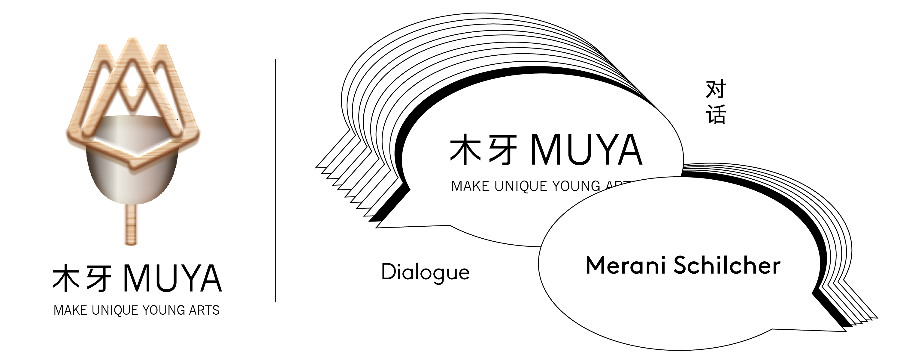欢迎来到木牙Make Unique Young Arts，让我们来讨论艺术创作中的生活与情感灵感，以及对于生活中平衡与失衡状态的一些看法～
自我毁灭，一个自然的人格倾向。弗洛伊德认为，人的本能有两种，一是爱的本能（或者性的本能），二是死亡的本能。前者是建设性的，后者是具有破坏性的。在自我毁灭状态下，探寻的一种平衡，亦是一种危机的失衡。
艺术家的作品，通常是对于当下的一种态度和发声，很多时候也会是一种情感转化。是痛苦的，煎熬的，快乐的，幸福的，或是纠结的。艺术将情感实体化，将物体人格化，将人物形象化。是对生活情感平衡的一种无穷探索。
今天我们邀请了 Merani Schilcher 来到 木牙MUYA 和我们聊一聊，她艺术创作的生活与情感灵感，还有她对于生活中平衡与失衡状态的一些看法。
Self-destruction, a natural personality tendency. According to Freud, there are two instincts, one is the instinct of love (or sex), and the other is the instinct of death. The former is constructive; the latter is destructive. In a state of self-destruction, the search for a balance is also a crisis of imbalance.
Artists' works are usually an attitude and a voice for the present, and in many cases, they also represent an emotional transformation. Is painful, suffering, happy, happy, or tangled. Art materializes emotions, personalizes objects, and visualizes figures. It is an endless exploration of emotional balance in life.
We invited Merani Schilcher to Muya to talk to us about the life and emotional inspiration of her art creation, as well as her thoughts on balance and imbalance in life.
Merani Schilcher是一位媒体艺术家和设计师，对柏林的互联网、机器和实验充满热情。科技中的人类特征，以及我们作为人类目前如何使用和连接是她的一大关注点。她是柏林艺术大学Joachim Sauter教授(Art+Com)的新媒体艺术学士毕业生，曾在台北、阿伯丁和斯图加特学习。
Merani Schilcher is a media artist and designer with a passion for the internet, machines and experiments from Berlin. Human characteristics in technology and how we as humans are currently using and connecting with is a large focus of hers. She’s a recent Berlin University of the Arts BA New Media Arts graduate of Prof. Joachim Sauter’s (Art+Com) and has previously also studied in Taipei, Aberdeen and Stuttgart.
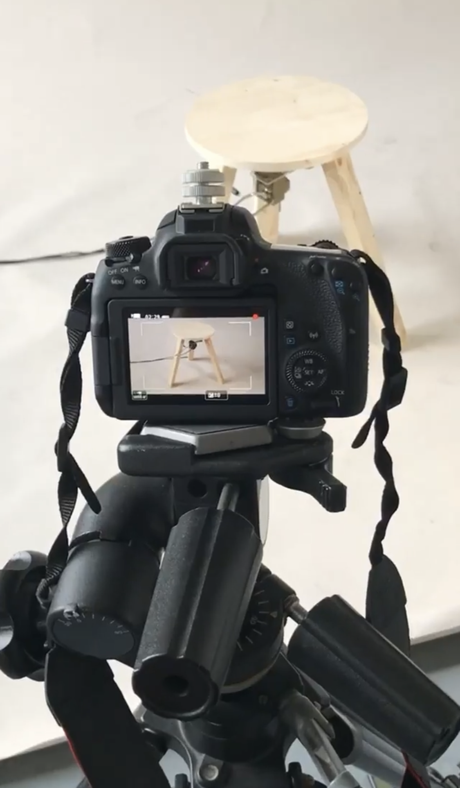

Merani Schilcher 对互联网、机器和实验充满热情。她的兴趣范围从宇宙的大问题一直到更轻松的问题，如“我应该再做一个红色项目吗?”她的关注点总是与科技中的人类特征有关，以及我们人类目前如何使用和连接科技。她曾在柏林、斯图加特、阿伯丁和台北学习。
Merani Schilcher interests range from the big questions of the universe all the way to more light-hearted ones like “should I make yet another red project?”. Her focus is always somehow related to human characteristics in technology and how we as humans are currently using and connecting with it. She has previously studied in Berlin, Stuttgart, Aberdeen and Taipei.
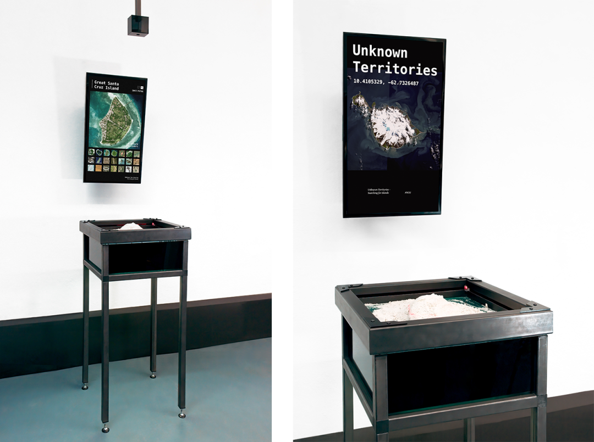
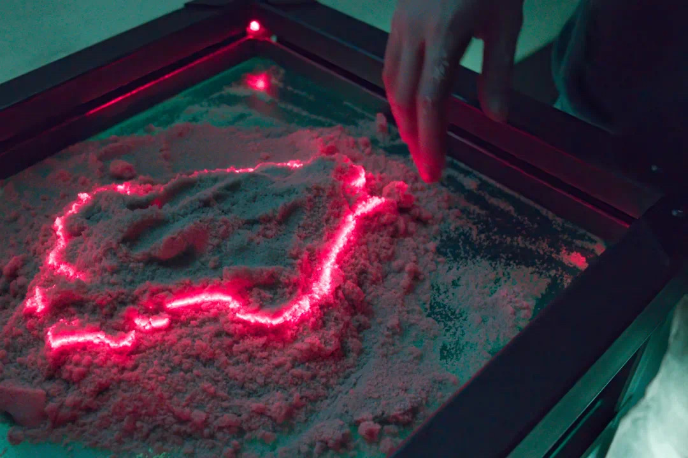

➤ 木牙MUYA: 技术和人类之间的发展中的好与坏，Merani Schilcher是如何理解和定义的呢？
How does Merani Schilcher understand and define the good and bad in the development between technology and humans?
Merani Schilcher: 我非常担心艺术家会变得懒惰。现成产品越来越多，随着机器生成的艺术（尤其是AI Art）的出现，很多艺术都缺乏内容和概念，以“机器在做梦，我无法控制”的形式将其注销。实际上，这只是一台生成所给出的每个图像的平均值的机器。大多数情况下，这是难以辨认的数据可视化。我认为，技术是应该牢记的一个非常重要的因素。努力保持最新并使用新技术令人兴奋和令人钦佩，但它绝不应成为主要重点。 （至少对我而言）主要关注点始终是每件作品背后的思想和尝试传达的信息。
I’m very worried about artists becoming lazy. There are increasingly more ready-mades and with the advent of machine-generated art (AI Art especially) a lot of art is lacking content and concepts, writing it off as “the machine is dreaming, i have no control over it”. In reality, this is just a machine generating the average of each image it was given. Most times it is an illegible data visualisation. In my opinion, technology is a very important factor you should always keep in mind. Trying to stay current and using new technologies is exciting and admirable, but it should never be the main focus. The main focus (for me at least) is always the thought behind every work. The message you try to convey.
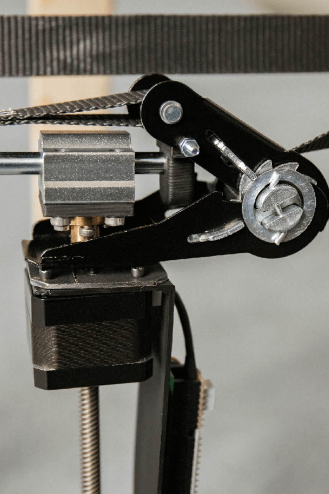
➤ 木牙MUYA: Merani Schilcher 在不断的观察中挖掘制作 autoantibody.1 和 autoantibody.2 这两个作品，可以更具体的聊聊作品的内容吗？
Merani Schilcher has dug out and produced autoantibody.1 and autoantibody.2 through constant observation. Can you talk about the content of the works more specifically?
Merani Schilcher: 好吧，那两个作品是在我人生中面对很多的改变与挣扎的一段时间创作出来的。我脑海中有很多的时间段并且真的很想倾听我当时的感受。这也引导着我创作的作品作为我自己情感动荡的化身。其中一部作品，就是尝试扮演一种行为无论你如何看待它，都只能伤害到你自己。另一部作品，则集中在竭尽全力的动作上，再一次没有赢得冲突并依然在伤害自己。它们都是高度个人化的自毁机器，但我相信很多人都可以从这些荒唐的凳子中辨认。从某种意义上讲，使得这种疼痛更具幽默感并减轻了一定的疼痛负担。
Well those two works were created in a time were I was struggling with a lot of change in my life. I had a lot of time within my own head and really tried to listen to what I was feeling. And I let it lead me to create these works as personifications of my own emotional turmoil. One of them is about acting in a way that can only hurt yourself, no matter how you look at it. The other is centered around the action of bending over backwards so much that you’re, again, not winning the conflict and hurting yourself. They’re both highly personal self-destructive machines, but I believe a lot of people can identify with these absurdly human stools. Which in a way makes this pain humorous and takes weight off of it.
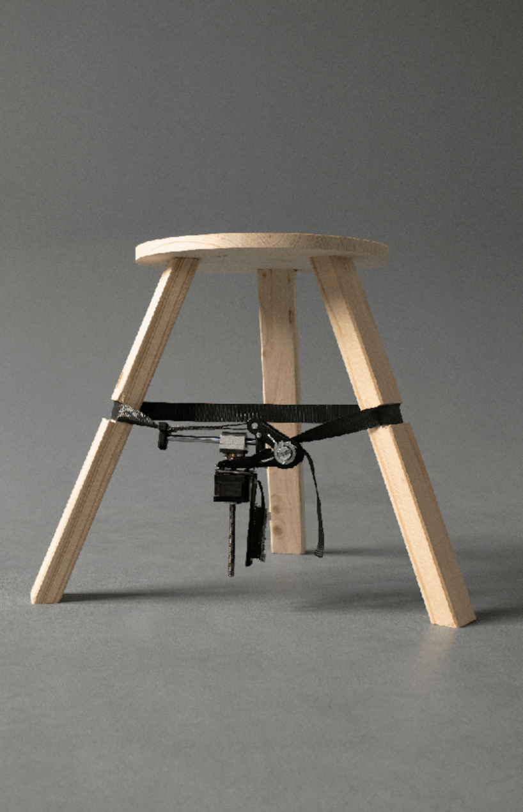
➤ 木牙MUYA: 对比起其他的表现形式，不断持续的切割椅子的一只脚，就像是在暗示机器在无形间破坏了原有的平衡。Merani Schilcher 认为是什么打破了这种平衡？
In contrast to other forms of expression, the continuous cutting of one foot of the chair, as if it is implying that the machine has invisibly destroyed the original balance. What does Merani Schilcher think has broken this balance?
Merani Schilcher:这项工作并不是真正意义上的打破平衡。由于锯总是固定在凳子上，所以锯子始终处于不平衡状态，它们永远不会分开。而且它也不是导致椅子自我毁坏的原因。它仅表示自我毁灭的行为，让观看者回想起自己瞬间的感受或表现方式的相似经历。
The work is not really about the breaking of balance. It is in a constant imbalance due to the saw always being attached to the stool, they’re never apart. And there is also not one reason that causes the chair to self-destruct. It is meant to only show the act of self-destruction to remind the viewer of their own moments where they felt or acted a similar way.
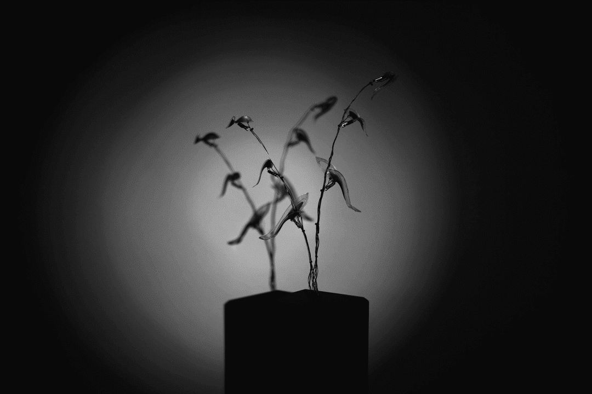
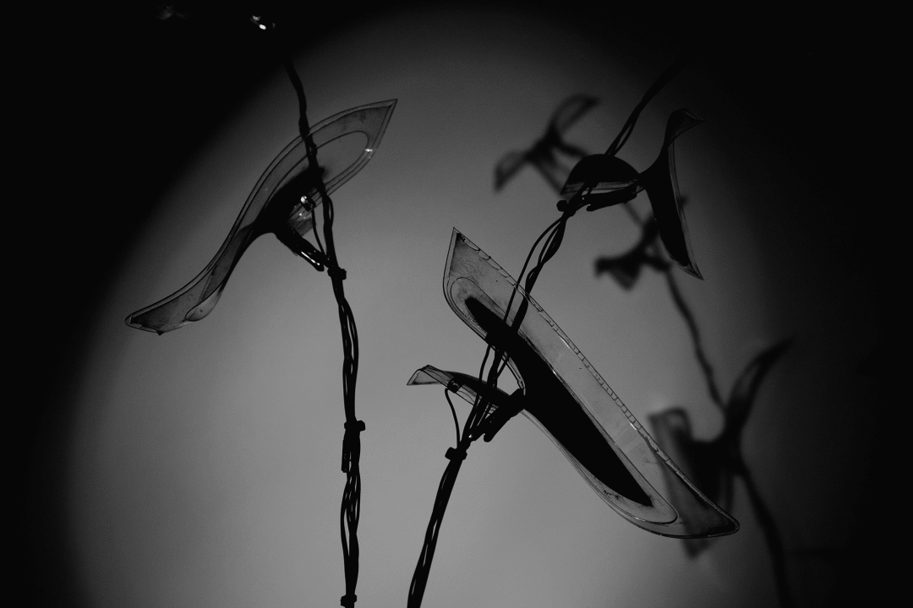
➤ 木牙MUYA: Autoantibody.1的装置中，不断的在据一条腿的感觉，除了打破平衡，更让感觉到了一种椅子在“自我伤害和破坏”的状态，请问Merani Schilcher是如何理解在生活中，个人在心理上和身体上的“自我破坏”的概念的呢？
AutoAntibody.1 is cutting one leg, this is not only breaking the balance, but also causing the chair to "self-harm and damage" situation. How does Merani Schilcher understand the concept of "self-destruction" in life, both psychologically and physically?
Merani Schilcher:关于自我毁灭的有趣之处在于，无论何时我们采取此类行为，在这种情况下，我们通常实际上认为这对我们有益。这被认为是我们跌入湍流的一种短暂缓解。
The interesting thing about self-destruction is that whenever we resort to such actions, in that situation we’re usually actually thinking that it benefits us. It’s considered a short relief from turbulence we fell into.
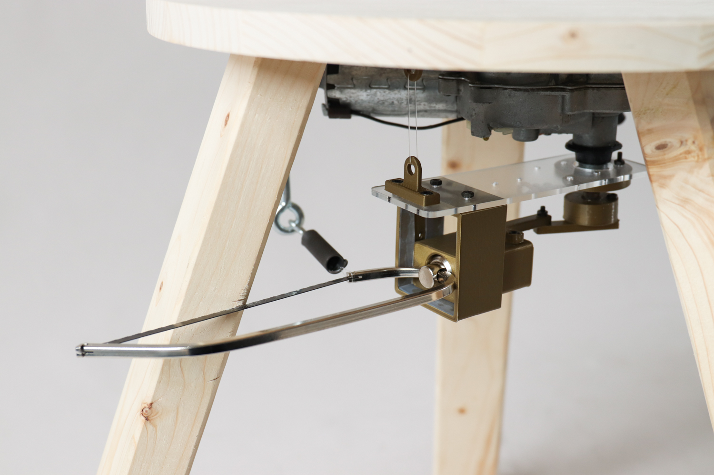
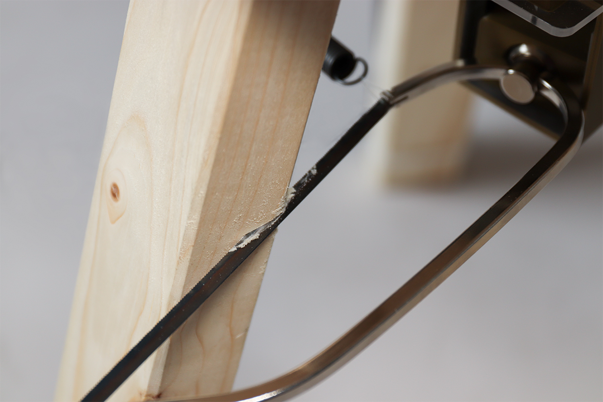
➤ 木牙MUYA: 关于类似的话题 Merani Schilcher 是否有在做新的计划？作为一个媒体艺术家是如何将不同于传统的装置艺术的思想融合进你的作品里的呢？
On similar topics, is Merani Schilcher making new plans? As a media artist, how do you integrate ideas different from traditional installation art into your works?
Merani Schilcher:我一直在做一些新的东西。什么是传统装置艺术？通过我的研究，我发现了很多我关注的主题和材料，其他人也以类似的方式关注了我。像古斯塔夫·梅茨格（Gustav Metzger）或让·廷格利（Jean Tinguely）这样的人在1960年代创作了出色的艺术作品，其中有些甚至无法告诉您它已经存在了很长时间。从那时起，什么都没有改变，即使今天机会和材料可能成倍增加，装置艺术也没有太大改变。如果您是按照这样的方式来定义的话，也许我也是传统主义者。
I’m always cooking up something new. And what is considered traditional installation art? Through my research I found out that a lot of the topics and materials I’m focussing on, other people have focussed on in similar ways loooong before me. People like Gustav Metzger or Jean Tinguely have made fantastic art in the 1960s, with some of them you can’t even tell that it’s been so long. Nothing much has changed since then, even if today the opportunities and materials might have multiplied, installation art hasn’t changed much. And maybe I’m also a traditionalist if you think about it that way.
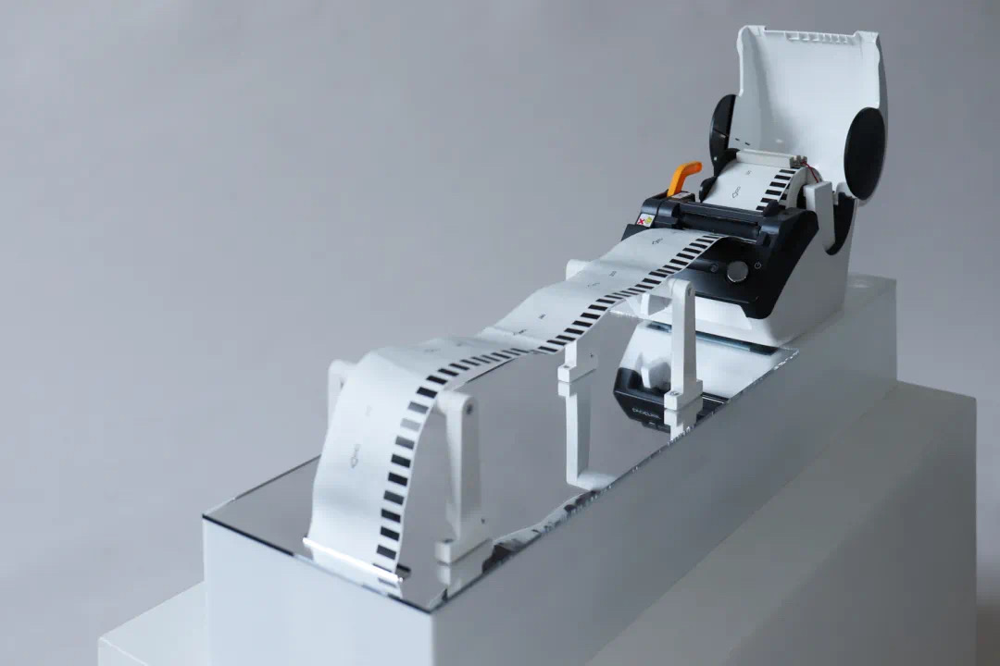
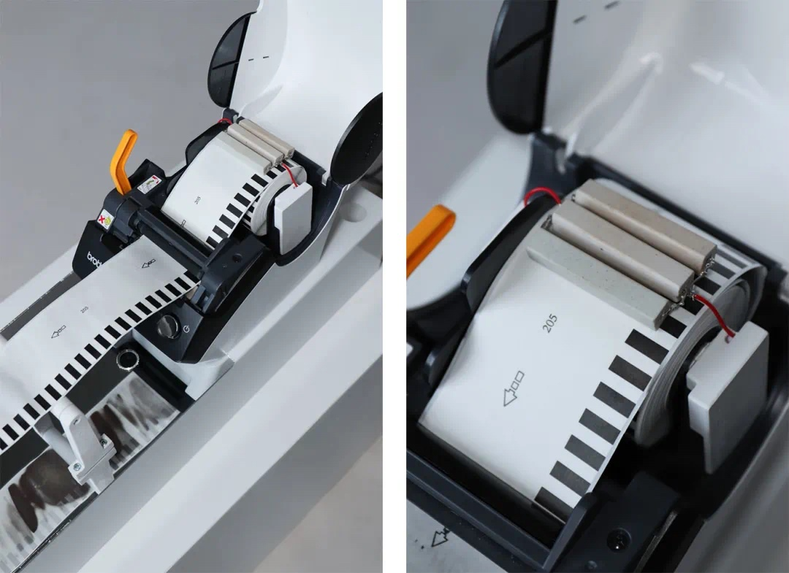
➤ 木牙MUYA: Autoantibody.2的装置中，为其中两腿增加绑定与配重，投入过多的精力在一部分，也会造成失衡，但是在我们日常生活中，很容易陷入一种被迫失衡的状态，大部分情况下，我们会选择取舍的方式来达到一种平衡，您是如何看待生活中的“取舍”行为呢？
In Autoantibody. 2 installation, spending too much energy on the part that can cause imbalances, but in our daily life, it is easy to fall into a state of forced imbalance. In most cases, we will get rid of a part of stuff to achieve a balance, how do you think of this behavior in life?
Merani Schilcher:我全力以赴。我坚信不断努力改善生活的任何部分-尤其是如果这样做的原因是你试图拥有更加清晰和不麻烦的头脑。
I’m all for it. I believe in constantly trying to improve any part of your life – especially if the reason for it is you trying to have a clearer, less troubled mind.
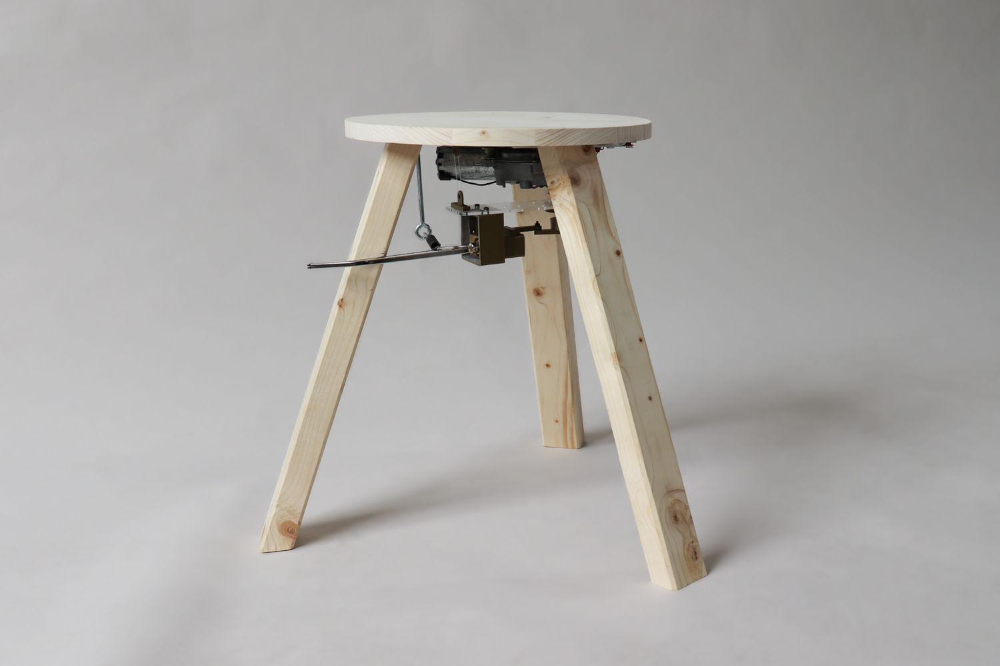
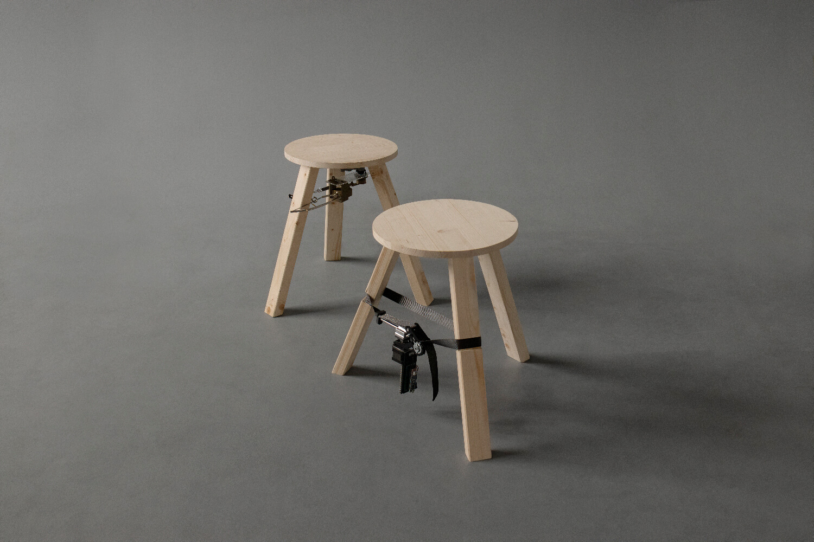
➤ 木牙MUYA:三角形具有稳定性，是这个项目的潜在支撑概念，但是三边支撑的物品有很多，可以跟我们聊聊Merani Schilcher为什么会选择椅子，又为什么会选择木材这样的材料呢？
Triangle is a potential support concept for this project because of its stability. However, there are many items supported by three sides. Could you please tell us why Merani Schilcher chose chairs and materials such as wood?
Merani Schilcher:木材是我能找到的最合适的材料，它曾经活着，但仍然可以提供死亡的稳定性。通过它，它传达了舒适和温暖的感觉。我喜欢凳子的简单性。在许多工业设计课程中，设计的第一个物品就是凳子。我将这些知识带给自己，并尝试用适合我其他作品的方式对其进行转换。因此，我猜想这一切的总和将在视觉和情感/概念层面上消除舒适感。
Wood is the best material I could find that was once alive but still provides a stability in death. Through it all, it transmits feelings of comfort and warmth. And I like the simplicity of a stool. In many industrial design courses, the first thing you design is a stool. I took this knowledge upon myself and wanted to transform it in a way that fits the rest of my work. So I’m guessing the sum of it all is extinguishing comfort on both a visual and an emotional/conceptual level.
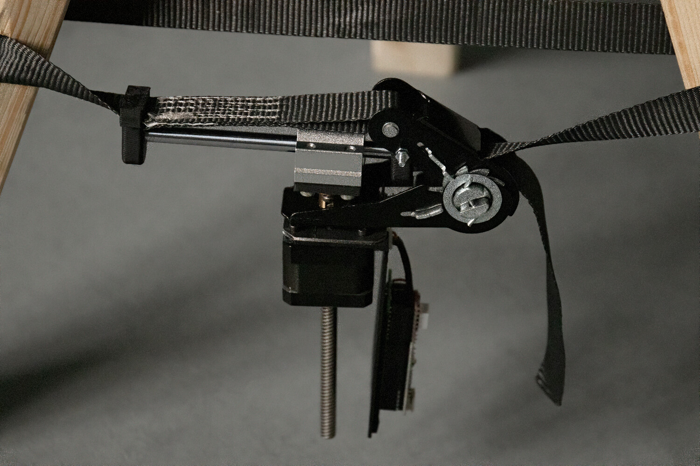
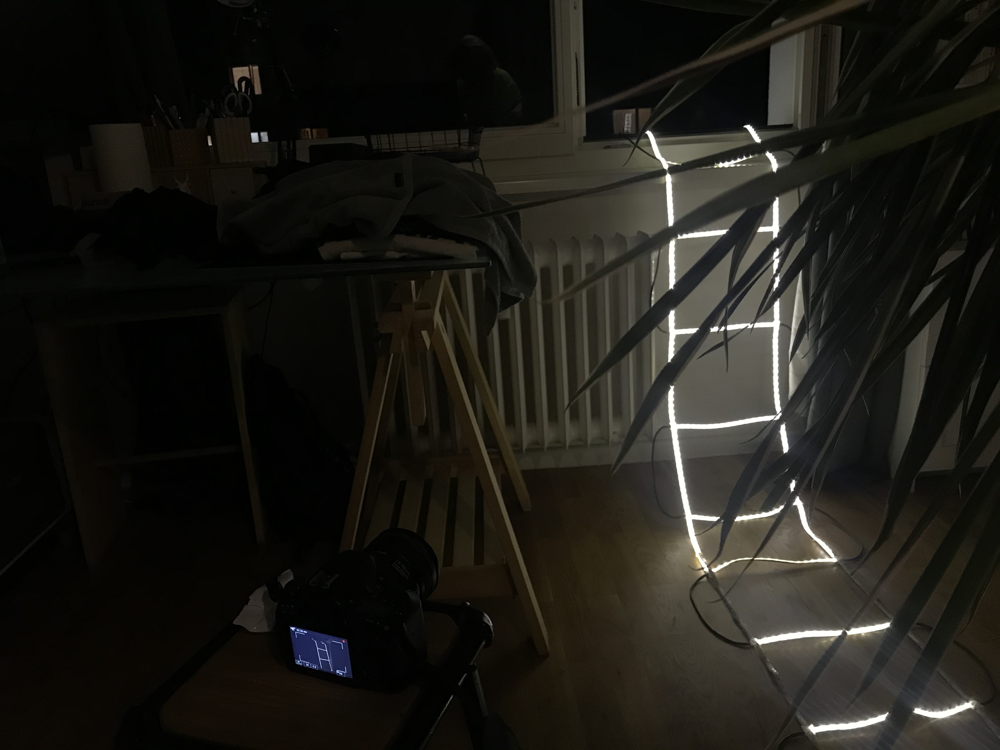
➤ 木牙MUYA:Merani Schilcher 如何看待艺术家将物体角色化的创作手法呢？在创作的过程中，如何将主观和客观的观点达到一种平衡的呢？
What does Merani Schilcher think of the artist's way of personalizing objects? In the process of creation, how to achieve a balance between subjective and objective viewpoints?
Merani Schilcher:爱它！当然，作为所有人，我只能*真的*知道我自己的感受并完整地思考。设法传达他人可以与之相关的体验，即使彼此之间不认识，也可以使彼此相互联系，我认为这是艺术必须完成的主要工作。
love it! Of course, as everyone, I can only *really* know what I myself feel and think in its entirety. Managing to transport experiences that other people can relate to, connects you to one another, even if you don’t know each other, and I think that’s the main job that art has to fulfil.
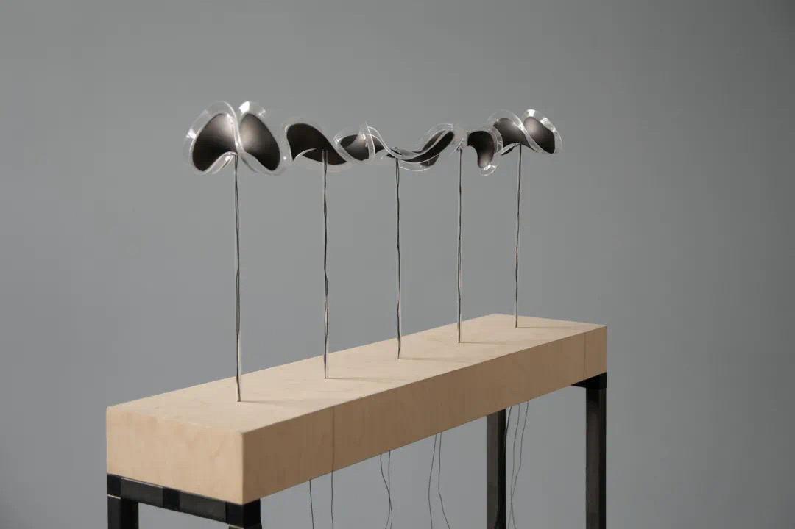
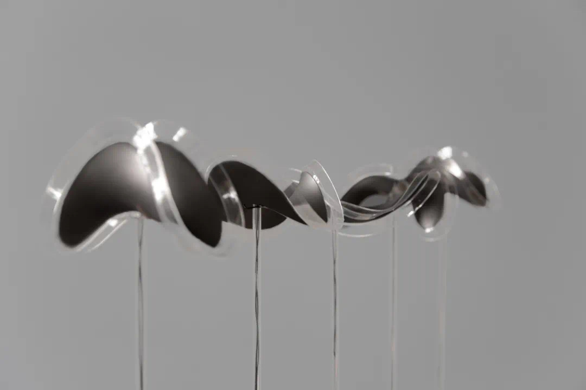
✯ Which inspire your works most ✯
"There's a world which is incredibly complex and getting more complex by the millisecond worldwide. How can I as an artist relate to it, how can I fix it, how can I pin it down? And so the answer is to maximise input into a work of art. In other words the Futurists talked of the roaring of an automobile, for us it's the explosion of a nuclear bomb. It's the expression of our time, of a particular aspect of our time. [...] it's the maximisation of activity, of human activity, good and bad, which is the challenge before me as an artist." -- Gustav Metzger
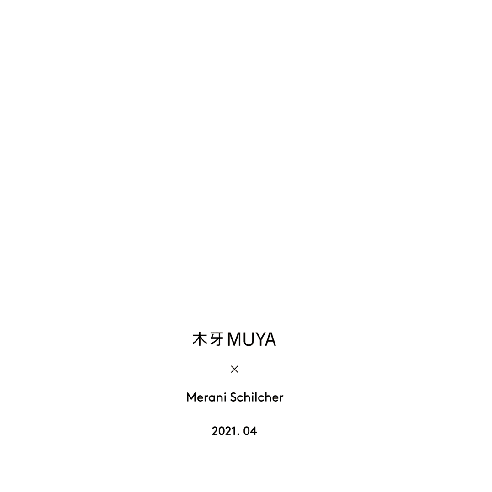
木牙微信订阅号